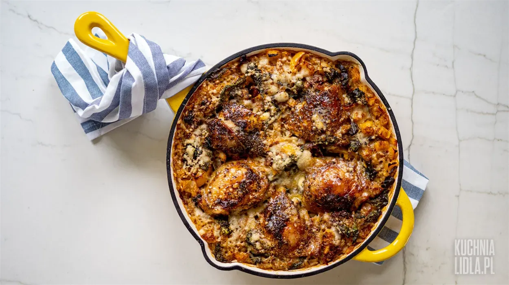

Zapiekany ryż z udkami kurczaka i warzywami

Opis
Ryż zapiekany à la risotto z aromatycznymi udkami kurczaka i wyjątkowymi dodatkami. Przygotuj to proste danie dla całej rodziny, które niejedną osobę zachwyci smakiem.
Skladniki
- oliwa z oliwek
- papryka wędzona mielona
- zioła włoskie
- kurczak udko
- cebula
- ryż do risotto
- pomidory suszone w oleju
- szpinak świeży
- papryka żółta
- bulion drobiowy
Przepis:
- KROK 1: PRZYGOTOWUJEMY MIĘSO
- KROK 2: PRZYGOTOWUJEMY SKŁADNIKI I PODSMAŻAMY RYŻ
- KROK 3: PODSMAŻAMY POZOSTAŁE SKŁADNIKI
- KROK 4: PIECZEMY ZAPIEKANKĘ